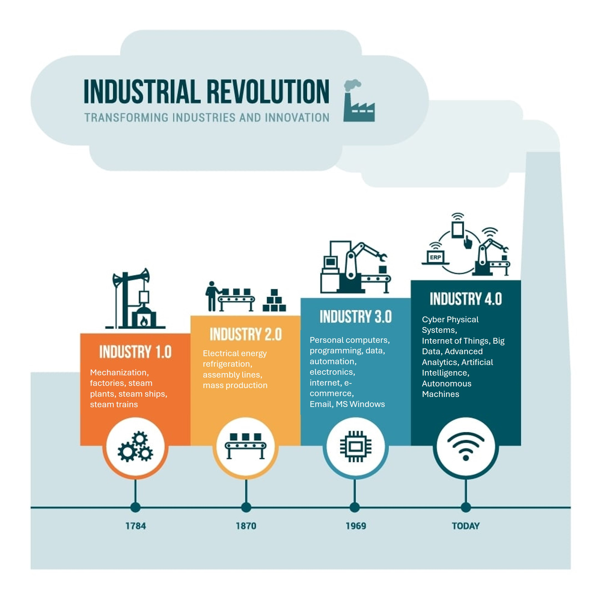
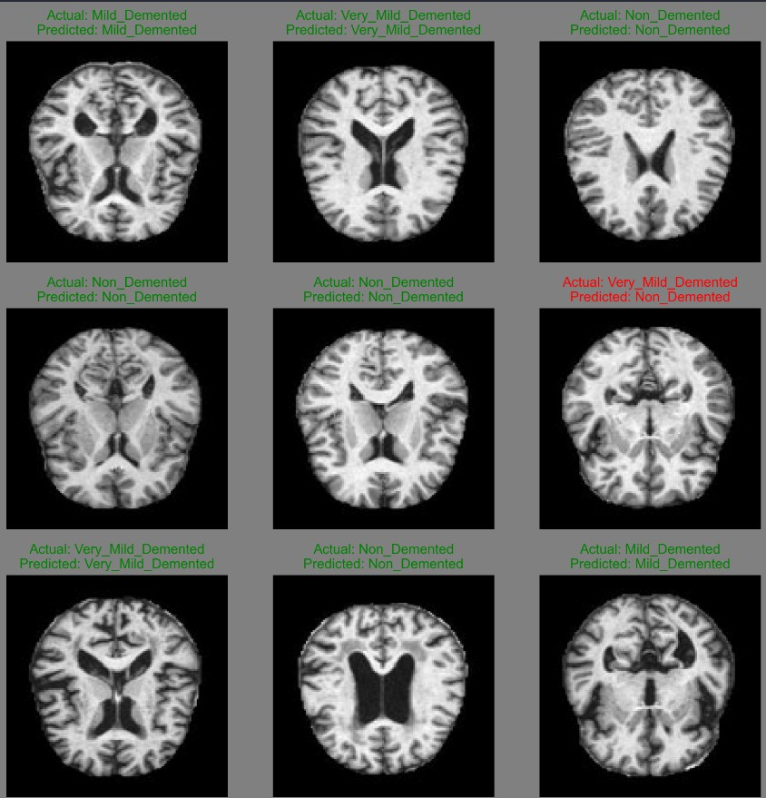
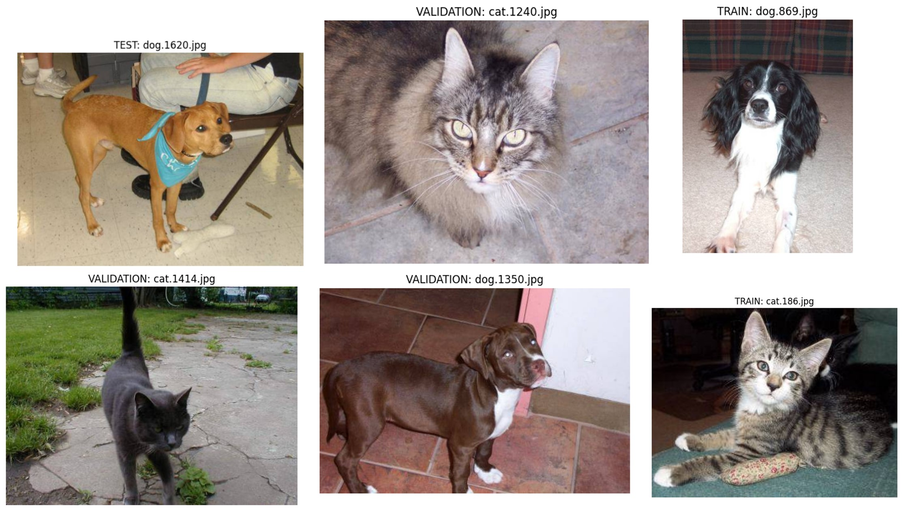
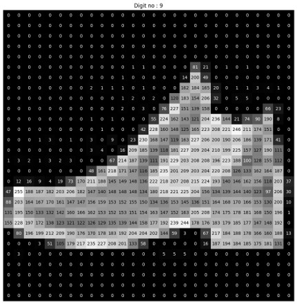
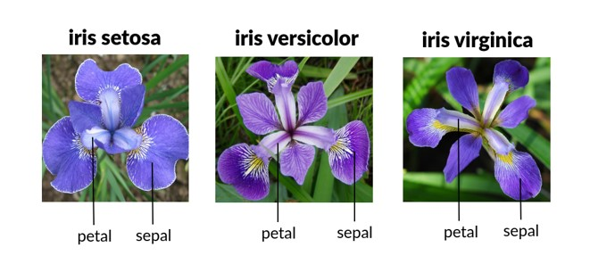

June 11, 2024
As a Fourth Industrial Revolution enthusiast, I have been studying and creating
machine learning algorithms to help businesses make data-driven decisions.
I am committed to supporting the traditional and tech industries in sailing through
this new revolution. Throughout this page, you will be able to see some of my work
in the universe of machine learning and artificial intelligence.


The objective of this project is to analyze a preprocessed Alzheimer's MRI dataset using machine learning
algorithms to identify the stage of dementia in individuals. This work was a collaborative effort with my
exceptional classmate, Sachin Joseph.

This code demonstrated a common practice among deep learning engineers: taking an existing model that
performed a similar task and fine-tuning it for a specific purpose. In this case, we developed an algorithm to classify images as either
containing a dog or a cat. While this task was straightforward for humans (and perhaps even for dogs and cats),
it presented a greater challenge for our computer model.

Fashion-MNIST is a dataset of Zalando's article images—consisting of a training set of 60,000
examples and a test set of 10,000 examples. Each example is a 28x28 grayscale image, associated
with a label from 10 classes.

The MNIST dataset, commonly used in machine learning for handwritten digit recognition, consists
of 70,000 images (60,000 for training and 10,000 for testing) of handwritten digits from 0 to
9.Each image is 28x28 pixels in size. The database is also widely used for training and testing
in the field of machine learning.

The goal in this code is to classify the species of an Iris flower given the dimensions of parts
of the flower. The iris data set consists of the physical parameters of three species of flower
— Setosa, Versicolor and Virginica.
The goal in this code is to explore Multivariate Regression Using Polynomial, Decision Trees and
kNN, to optimize a model for predicting diabetes disease progression.
The goal is to build a model that can best predict the risk of diabetes progression, given the
body mass index (BMI) feature in the dataset. This will be used as a screening tool to help
physicians with identifying patients at risk.
This code is about exploring the house prices for California districts derived from the 1990
census and using linear regression between: median house value vs. median income; median house
value vs. population; and median house value vs. number of households.
In this project, we will use the plotting library for Python called Matplotlib. As data, we will
use the classic Titanic database, containing the number of passengers, age, sex, survivors, etc.